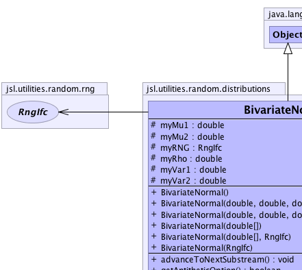
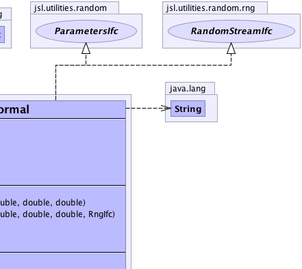
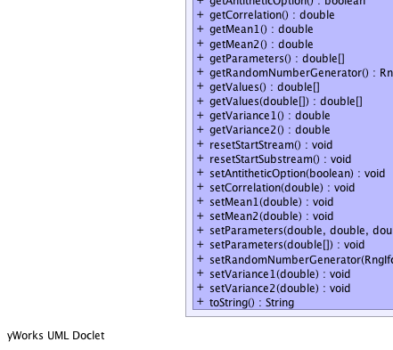
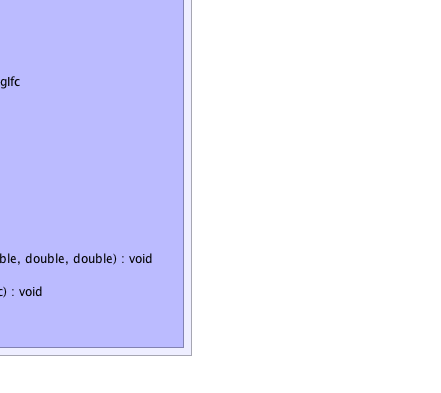

jsl.utilities.random.distributions.BivariateNormal
jsl.utilities.random.distributions.BivariateNormal
|
||||||||||
| PREV CLASS NEXT CLASS | FRAMES NO FRAMES | |||||||||
| SUMMARY: NESTED | FIELD | CONSTR | METHOD | DETAIL: FIELD | CONSTR | METHOD | |||||||||
java.lang.Object
public class BivariateNormal
Allows for the generation of bivariate normal random variables
|  |  |
|  |  |
| Field Summary | |
|---|---|
protected double |
myMu1
|
protected double |
myMu2
|
protected double |
myRho
|
protected RngIfc |
myRNG
|
protected double |
myVar1
|
protected double |
myVar2
|
| Constructor Summary | |
|---|---|
BivariateNormal()
Constructs a standard bivariate normal with no correlation |
|
BivariateNormal(double[] param)
Interprets the array of parameters as the parameters param[0] = mean 1; param[1] = variance 1; param[2] = mean 2; param[3] = variance 2; param[4] = correlation; |
|
BivariateNormal(double[] param,
RngIfc rng)
Interprets the array of parameters as the parameters param[0] = mean 1; param[1] = variance 1; param[2] = mean 2; param[3] = variance 2; param[4] = correlation; |
|
BivariateNormal(double mean1,
double var1,
double mean2,
double var2,
double rho)
|
|
BivariateNormal(double mean1,
double var1,
double mean2,
double var2,
double rho,
RngIfc rng)
Constructs a bivariate normal with the provided parameters |
|
BivariateNormal(RngIfc rng)
Constructs a standard bivariate normal with no correlation |
|
| Method Summary | |
|---|---|
void |
advanceToNextSubstream()
Positions the RNG at the beginning of its next substream |
boolean |
getAntitheticOption()
|
double |
getCorrelation()
Gets the correlation |
double |
getMean1()
Gets the first mean |
double |
getMean2()
Gets the second mean |
double[] |
getParameters()
Returns the parameters as an array param[0] = mean 1; param[1] = variance 1; param[2] = mean 2; param[3] = variance 2; param[4] = correlation; |
RngIfc |
getRandomNumberGenerator()
Returns the distributions underlying random number generator |
double[] |
getValues()
Returns an array containing the bivariate pair x[0] = 1st marginal x[1] = 2nd marginal |
double[] |
getValues(double[] x)
Fills the supplied array with 2 values As a convenience also returns the array |
double |
getVariance1()
Gets the first variance |
double |
getVariance2()
Gets the 2nd variance |
void |
resetStartStream()
The resetStartStream method will position the RNG at the beginning of its stream. |
void |
resetStartSubstream()
Resets the position of the RNG at the start of the current substream |
void |
setAntitheticOption(boolean flag)
Tells the stream to start producing antithetic variates |
void |
setCorrelation(double rho)
Sets the correlation |
void |
setMean1(double mean)
Sets the first mean |
void |
setMean2(double mean)
Sets the second mean |
void |
setParameters(double[] param)
Interprets the array of parameters as the parameters param[0] = mean 1; param[1] = variance 1; param[2] = mean 2; param[3] = variance 2; param[4] = correlation; |
void |
setParameters(double mean1,
double var1,
double mean2,
double var2,
double rho)
Sets all the parameters |
void |
setRandomNumberGenerator(RngIfc rng)
Sets the underlying random number generator for the distribution Throws a NullPointerException if rng is null |
void |
setVariance1(double variance)
Sets the first variance |
void |
setVariance2(double variance)
Sets the 2nd variance |
java.lang.String |
toString()
|
| Methods inherited from class java.lang.Object |
|---|
clone, equals, finalize, getClass, hashCode, notify, notifyAll, wait, wait, wait |
| Field Detail |
|---|
protected RngIfc myRNG
protected double myMu1
protected double myVar1
protected double myMu2
protected double myVar2
protected double myRho
| Constructor Detail |
|---|
public BivariateNormal()
public BivariateNormal(RngIfc rng)
public BivariateNormal(double mean1,
double var1,
double mean2,
double var2,
double rho)
mean1 - var1 - mean2 - var2 - rho - public BivariateNormal(double[] param)
param -
public BivariateNormal(double[] param,
RngIfc rng)
param - rng -
public BivariateNormal(double mean1,
double var1,
double mean2,
double var2,
double rho,
RngIfc rng)
mean1 - var1 - mean2 - var2 - rho - rng - | Method Detail |
|---|
public void setAntitheticOption(boolean flag)
RandomStreamIfc
setAntitheticOption in interface RandomStreamIfcflag - true means that it produces antithetic variates.public void resetStartSubstream()
RandomStreamIfc
resetStartSubstream in interface RandomStreamIfcpublic void resetStartStream()
RandomStreamIfc
resetStartStream in interface RandomStreamIfcpublic void advanceToNextSubstream()
RandomStreamIfc
advanceToNextSubstream in interface RandomStreamIfc
public final void setParameters(double mean1,
double var1,
double mean2,
double var2,
double rho)
mean1 - var1 - mean2 - var2 - rho - public final void setParameters(double[] param)
setParameters in interface ParametersIfcparam - public final double[] getParameters()
getParameters in interface ParametersIfcpublic final void setMean1(double mean)
mean - of the distributionpublic final double getMean1()
public final void setVariance1(double variance)
variance - of the distribution, must be > 0public final double getVariance1()
public final void setMean2(double mean)
mean - public final double getMean2()
public final void setVariance2(double variance)
variance - of the distribution, must be > 0public final double getVariance2()
public final void setCorrelation(double rho)
rho - public final double getCorrelation()
public RngIfc getRandomNumberGenerator()
public void setRandomNumberGenerator(RngIfc rng)
rng - the reference to the random number generatorpublic double[] getValues(double[] x)
x - Must be of size 2 or larger
public double[] getValues()
public java.lang.String toString()
toString in class java.lang.Objectpublic boolean getAntitheticOption()
getAntitheticOption in interface RandomStreamIfc
|
||||||||||
| PREV CLASS NEXT CLASS | FRAMES NO FRAMES | |||||||||
| SUMMARY: NESTED | FIELD | CONSTR | METHOD | DETAIL: FIELD | CONSTR | METHOD | |||||||||